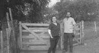

Trabajos Realizados
- La Rioja 2021
- La Rioja 2022
- Corrientes
- Misiones
- Caminiaga
- Pozo Nuevo
- Incendios de Córdoba
- Hogar Sierra Dorada
- Capacitaciones
- Taller sobre Triage Defensa Civil Anizacate.
- RCP para Empresas: capacitación OSSURBAC.
- RCP para Voluntarios: RCP básico.
- Charlas para la comunidad
El Hospital Ambulante recibe tal denominación desde noviembre del 2021, fruto de la fusión de voluntari@s con experiencias en otras actividades, comprometid@s con llevar Salud a quienes más necesitan.
Viaje a Olta, Tama y poblados cercanos (noviembre 2021).
Viaje a Loma Blanca, El Carrizal, Catuna y Milagros (febrero, mayo y junio 2022).
Durante los incendios, asistencia en Ituzaingó y Loma de Vallejos a brigadistas.
Atenciones a comunidades rurales de Oberá, y pueblos originarios Mbyá.

Viaje a Caminiaga y poblados aledaños (mayo 2022).
Atenciones a la población local y provenientes de Santiago del Estero (mayo 2022).
Se brinda apoyo sanitario a bomberos y brigadistas.
Se asiste a niñas, niños y adolescentes judicializados.

En evento solidario "Juntos Damos Más" - Forja